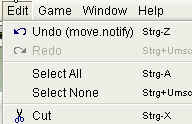

|
|
jose 1.4.1 |
|

Select all text in the current Game Panel
Clear the selection in the current Game Panel
Cut text and place it in the system clipboard.
Please note that text in the game panel is not freely editable. See Game Panel for details.
Copy text into the system clipboard.
Paste text from the system clipboard into your text.
Please note that text in the game panel is not freely editable. See Game Panel for details.
Delete text.
Please note that text in the game panel is not freely editable. See Game Panel for details.

Paste text from the system clipboard into your text.
Please note that text in the game panel is not freely editable. See Game Panel for details.
Permanently delete games from the Trash folder.
Note: after doing this, these games can not be restored anymore.
Restore a game from the Trash folder. The game will be restored to its original location.
Update ECO classification for the selected game or folder. First you can set these options:
Open The Settings Dialog
|
|
© 2002-2006 jose-chess.sourceforge.net |
|